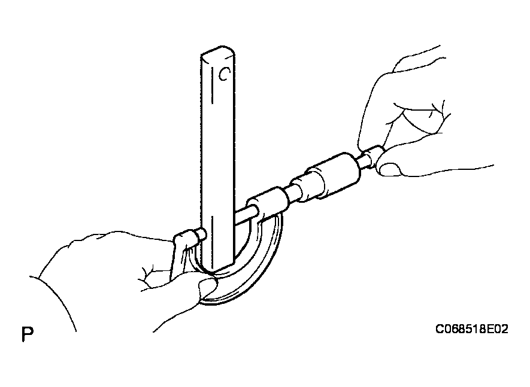

Differential Case: Inspection
- INSPECT FRONT DIFFERENTIAL PINION THRUST WASHER
- Using a micrometer, measure the thickness.
Minimum thickness: 0.94 mm (0.0370 in.)
If the thickness is less than the minimum, replace the front differential pinion thrust washer.
- Using a micrometer, measure the thickness.
- REMOVE FRONT NO. 1 DIFFERENTIAL PINION SHAFT
- Using a micrometer, measure the diameter of the front No. 1 differential pinion shaft.

Courtesy of © TOYOTA, LICENSE AGREEMENT TMS1002Minimum diameter: 16.982 mm (0.6685 in.)
If the diameter is less than the minimum, replace the front No. 1 differential pinion shaft.
- Using a micrometer, measure the diameter of the front No. 1 differential pinion shaft.